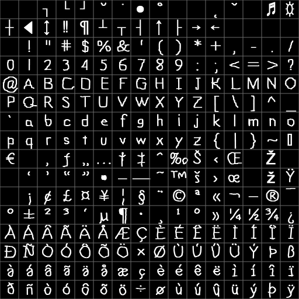

FreeType Fonts
Last Updated 12/21/12
FreeType is a library that lets us open a variety of font formats. Using the FreeType library, we'll create a texture from the individual character glyphs and render with it.Setting up FreeType
FreeType is a library specifically designed to get data from font files. Unlike DevIL and the other libraries we've been using, FreeType doesn't come as a precompiled library. You have to compile the source which you can acquire here.Make sure to download the latest version.
Extract the directory inside of the zip file somewhere. Now it's time to compile the library.
If you're a Visual Studio user, FreeType comes with a Visual Studio project file to help you compile it. It should be under builds -> win32 inside of the directory you extracted. Open the project file and build the library.
If you're using the GNU compiler you'll have to use GNU make to build your library. For Windows MinGW users (meaning also Code::Blocks users), I cover how to set the path for Make and the basics of working with Makefiles in the MinGW tutorial. You will have to run MinGW Make twice in a row to get it to create the *.a library file for your project.
After you build the library, your compiled library will be in the obj directory inside of the directory you extracted. If you find the library file and no binary file, that's normal because FreeType compiles as a static library by default. The whole library is inside of the library file and when you compile and link against it, the compiler will put the whole library in your executable.
As with freeGLUT you need to make sure:
- Your compiler can find the header files
- Your compiler can find the library files
- You tell the linker to link against the library.
From LTexture.cpp
void LTexture::createPixels8( GLuint imgWidth, GLuint imgHeight )
{
//Valid dimensions
if( imgWidth > 0 && imgHeight > 0 )
{
//Get rid of any current texture data
freeTexture();
//Create pixels
GLuint size = imgWidth * imgHeight;
mPixels8 = new GLubyte[ size ];
memset( mPixels8, 0, size );
//Copy pixel data
mImageWidth = imgWidth;
mImageHeight = imgHeight;
mTextureWidth = mImageWidth;
mTextureHeight = mImageWidth;
//Set pixel format
mPixelFormat = GL_ALPHA;
}
}
We're making a small change to the LTexture class. When we allocate 8bit pixels we 0 them out with memset(). This way the pixels we allocate are transparent by default.
From LFont.h
#ifndef LFONT_H
#define LFONT_H
#include "LSpriteSheet.h"
#include <ft2build.h>
#include FT_FREETYPE_H
FreeType handles its header inclusion a little differently. You include the ft2build.h header which contains macros, and include the macros as you need them.
At the top of LFont.h we include the base FreeType library.
At the top of LFont.h we include the base FreeType library.
From LFont.h
class LFont : private LSpriteSheet
{
public:
static bool initFreeType();
/*
Pre Condition:
-None
Post Condition:
-Instantiates FreeType library used for every LFont object
Side Effects:
-None
*/
LFont();
/*
Pre Condition:
-None
Post Condition:
-Initializes spacing variables
Side Effects:
-None
*/
~LFont();
/*
Pre Condition:
-None
Post Condition:
-Frees font
Side Effects:
-None
*/
bool loadBitmap( std::string path );
/*
Pre Condition:
-None
Post Condition:
-Loads bitmap font
-Returns true on success
-Reports errors to console
Side Effects:
-None
*/
bool loadFreeType( std::string path, GLuint pixelSize );
/*
Pre Condition:
-None
Post Condition:
-Creates internal 8bit texture with given font file
-Reports freetype error code if freetype error occurs
Side Effects:
-None
*/
void freeFont();
/*
Pre Condition:
-None
Post Condition:
-Deallocates texture and sprite sheet data
Side Effects:
-None
*/
void renderText( GLfloat x, GLfloat y, std::string text );
/*
Pre Condition:
-A loaded font
Post Condition:
-Renders text
Side Effects:
-Binds member texture and data buffers
*/
private:
//Font TTF library
static FT_Library mLibrary;
//Spacing variables
GLfloat mSpace;
GLfloat mLineHeight;
GLfloat mNewLine;
};
Here we have the LFont() class enhanced with the ability to load FreeType fonts.
We have a static FT_Library that can be used to load FreeType fonts for all the LFont objects and the static function initFreeType() we can use to initialize it. Then there's the function loadFreeType() which will load the FreeType font.
If it doesn't look like we're adding much, it's because we're only changing the fact that we're getting the character pixels from a TTF file instead of a bitmap font. We're still going to have a sprite sheet with all the character sprites, only now we're going to generate one with a TTF file.
We have a static FT_Library that can be used to load FreeType fonts for all the LFont objects and the static function initFreeType() we can use to initialize it. Then there's the function loadFreeType() which will load the FreeType font.
If it doesn't look like we're adding much, it's because we're only changing the fact that we're getting the character pixels from a TTF file instead of a bitmap font. We're still going to have a sprite sheet with all the character sprites, only now we're going to generate one with a TTF file.
From LFont.cpp
#include "LFont.h"
#include FT_BITMAP_H
We're going to use FreeType's bitmap functions to load the character pixels, so we include it at the top of LFont.cpp.
From LFont.cpp
//LFont library
FT_Library LFont::mLibrary;
bool LFont::initFreeType()
{
//Init FreeType for single threaded applications
#ifndef __FREEGLUT_H__
FT_Error error = FT_Init_FreeType( &mLibrary );
if( error )
{
printf( "FreeType error:%X", error );
return false;
}
#endif
return true;
}
Near the top of LFont.cpp, we instantiate our static FT_Library we could use for loading TTF fonts. In initFreeType() we could call FT_Init_FreeType() to initialize
the library so whenever a LFont object loads a TTF font it doesn't have to initialize a library everytime it loads.
As you can see, the initialization code is sandwiched in preprocessors that will cause the code to be ignored when compiled since freeGLUT is included. See, this code is built from a SDL/OpenGL codebase I had. It worked great for single threaded OpenGL applications but freeGLUT is multithreaded and FreeType requires one instance of FT_Library per thread. If you try to use a single FT_Library for multiple threads your program will crash.
Still, if you use a single threaded API you will probably want to have a static FT_Library library many font loading objects can use.
As you can see, the initialization code is sandwiched in preprocessors that will cause the code to be ignored when compiled since freeGLUT is included. See, this code is built from a SDL/OpenGL codebase I had. It worked great for single threaded OpenGL applications but freeGLUT is multithreaded and FreeType requires one instance of FT_Library per thread. If you try to use a single FT_Library for multiple threads your program will crash.
Still, if you use a single threaded API you will probably want to have a static FT_Library library many font loading objects can use.
From LFont.cpp
bool LFont::loadFreeType( std::string path, GLuint pixelSize )
{
//Error flag
FT_Error error = NULL;
//Init FreeType for multithread applications
#ifdef __FREEGLUT_H__
error = FT_Init_FreeType( &mLibrary );
if( error )
{
printf( "FreeType error:%X", error );
return false;
}
#endif
At the top of loadFreeType() we initialize "mLibrary" for our multithreaded freeGLUT program.
From LFont.cpp
//Get cell dimensions
GLuint cellW = 0;
GLuint cellH = 0;
int maxBearing = 0;
int minHang = 0;
//Character data
LTexture bitmaps[ 256 ];
FT_Glyph_Metrics metrics[ 256 ];
Before we start going through the font, we have some variables to declare.
As you can see, we're still using "cellW"/"cellH". In many ways, we're still using a bitmap font only we're making it when we load a TTF file.
We have "maxBearing", "minHang", and an array of FT_Glyph_Metrics for each character. A glyph is just a character image. A FT_Glyph_Metric structure contains the information about the positioning of a glyph:
The Y bearing is the distance from the baseline to the top most pixel. We're going to want to know what the tallest character sprite like we did in the Bitmap Fonts tutorial and that's why we have the "maxBearing" variable. We also want to know which character hangs the lowest below the baseline, and the "minHang" variable will contain the lowest pixel from a character glyph.
We also have an array of LTextures to hold the pixel data for all of the glyphs.
As you can see, we're still using "cellW"/"cellH". In many ways, we're still using a bitmap font only we're making it when we load a TTF file.
We have "maxBearing", "minHang", and an array of FT_Glyph_Metrics for each character. A glyph is just a character image. A FT_Glyph_Metric structure contains the information about the positioning of a glyph:
The Y bearing is the distance from the baseline to the top most pixel. We're going to want to know what the tallest character sprite like we did in the Bitmap Fonts tutorial and that's why we have the "maxBearing" variable. We also want to know which character hangs the lowest below the baseline, and the "minHang" variable will contain the lowest pixel from a character glyph.
We also have an array of LTextures to hold the pixel data for all of the glyphs.
From LFont.cpp
//Load face
FT_Face face = NULL;
error = FT_New_Face( mLibrary, path.c_str(), 0, &face );
if( !error )
{
To start loading our font, we first have to load a FT_Face. In a nutshell a font face is a set of glyphs you can render with. A font can have multiple faces such as regular,
italic, bold, bold italic, etc. This call to FT_New_Face() opens at the face at index 0 since the font should have at least one face.
If you want your font renderer to support multiple faces you can check if a certain face index exists with FT_Open_Face(). You can learn more about it in the FreeType documentation.
After loading the font face at index 0, we check if there were any errors. If not, we continue loading the font.
If you want your font renderer to support multiple faces you can check if a certain face index exists with FT_Open_Face(). You can learn more about it in the FreeType documentation.
After loading the font face at index 0, we check if there were any errors. If not, we continue loading the font.
From LFont.cpp
//Set face size
error = FT_Set_Pixel_Sizes( face, 0, pixelSize );
if( !error )
{
With the font face loaded, we want to control the size of the our character sprites. Our loadFreeType() takes in "pixelSize" which we're passing to FT_Set_Pixel_Sizes() to set
the maximum height for our gylphs. The second argument FT_Set_Pixel_Sizes() is the maximum width for the glyphs. Because it's set to zero, FT_Set_Pixel_Sizes() will only take into
account our maximum height.
From LFont.cpp
//Go through extended ASCII to get glyph data
for( int i = 0; i < 256; ++i )
{
//Load and render glyph
error = FT_Load_Char( face, i, FT_LOAD_RENDER );
if( !error )
{
Now it's time to get the individual 256 glyphs.
The function FT_Load_Char() loads a glyph from the given face with the given ASCII value. The third argument "FT_LOAD_RENDER" will make the FT_Load_Char() function not only get the glyph data but also render the pixels we need from the glyph.
The function FT_Load_Char() loads a glyph from the given face with the given ASCII value. The third argument "FT_LOAD_RENDER" will make the FT_Load_Char() function not only get the glyph data but also render the pixels we need from the glyph.
From LFont.cpp
//Get metrics
metrics[ i ] = face->glyph->metrics;
//Copy glyph bitmap
bitmaps[ i ].copyPixels8( face->glyph->bitmap.buffer, face->glyph->bitmap.width, face->glyph->bitmap.rows );
If the glyph successfully rendered, we want to get the glyph's data. The face object has a member "glyph" which contains the information for the glyph that was loaded with
FT_Load_Char(). Here we get the glyphs metrics from the "metrics" member of the glyph.
Then we need to store the pixels from the glyph image inside of our LTexture array using the copyPixels8() function. The glyph has a "bitmap" member that has the image data we need. "bitmap.buffer" contains the 8bit pixel data pointer, "bitmap.width" has the width of the glyph image, and "bitmap.rows" has how many rows of pixels there are which is the glyph image height.
Then we need to store the pixels from the glyph image inside of our LTexture array using the copyPixels8() function. The glyph has a "bitmap" member that has the image data we need. "bitmap.buffer" contains the 8bit pixel data pointer, "bitmap.width" has the width of the glyph image, and "bitmap.rows" has how many rows of pixels there are which is the glyph image height.
From LFont.cpp
//Calculate max bearing
if( metrics[ i ].horiBearingY / 64 > maxBearing )
{
maxBearing = metrics[ i ].horiBearingY / 64;
}
//Calculate max width
if( metrics[ i ].width / 64 > cellW )
{
cellW = metrics[ i ].width / 64;
}
//Calculate gylph hang
int glyphHang = ( metrics[ i ].horiBearingY - metrics[ i ].height ) / 64;
if( glyphHang < minHang )
{
minHang = glyphHang;
}
}
Now we need to find the maximum bearing using the metrics. The member "horiBearingY" is the distance from the baseline to top pixel in the glyph image when text is rendered
horizontally. FreeType also has the ability to render text vertically, but that's beyond the scope of this project.
If you're wondering why "horiBearingY" is divided by 64 it's because the metrics aren't measured in pixels. They're measured in points which are 1/64 of a pixel. The "maxBearing" variable is in pixels so we need to convert the metrics from points to pixels.
Next we need to find the maximum width in order to know how big to make the cells.
After that we find the hang which is how much the glyph goes below the baseline. As you can see from this diagram, the hang is the bearing minus the overall height of the glyph:
If you're wondering why "horiBearingY" is divided by 64 it's because the metrics aren't measured in pixels. They're measured in points which are 1/64 of a pixel. The "maxBearing" variable is in pixels so we need to convert the metrics from points to pixels.
Next we need to find the maximum width in order to know how big to make the cells.
After that we find the hang which is how much the glyph goes below the baseline. As you can see from this diagram, the hang is the bearing minus the overall height of the glyph:
From LFont.cpp
else
{
printf( "Unable to load glyph. FreeType error:%X\n", error );
error = NULL;
}
}
If the glyph could not load, we report an error to the console and keep going with the for loop until we go through all the extended ASCII values.
From LFont.cpp
//Create bitmap font
cellH = maxBearing - minHang;
createPixels8( cellW * 16, cellH * 16 );
//Begin creating bitmap font
GLuint currentChar = 0;
LFRect nextClip = { 0.f, 0.f, cellW, cellH };
//Blitting coordinates
int bX = 0;
int bY = 0;
Now that we're done getting all of the glyph images and all of the glyph metrics, it's time to create our texture.
First, we calculate how big we need to make the cell by taking the highest pixel point and subtracting the lowest point. Now that we know the cell width/height, we use createPixels8() to create a texture large enough to hold all the glyph images. LFont inherits from LSpriteSheet which inherits from LTexture, so we can still make LTexture calls.
Now, it's time to go through all the glyph images we have a blit them to the LFont texture.
First, we calculate how big we need to make the cell by taking the highest pixel point and subtracting the lowest point. Now that we know the cell width/height, we use createPixels8() to create a texture large enough to hold all the glyph images. LFont inherits from LSpriteSheet which inherits from LTexture, so we can still make LTexture calls.
Now, it's time to go through all the glyph images we have a blit them to the LFont texture.
From LFont.cpp
//Go through cell rows
for( unsigned int rows = 0; rows < 16; rows++ )
{
//Go through each cell column in the row
for( unsigned int cols = 0; cols < 16; cols++ )
{
//Set base offsets
bX = cellW * cols;
bY = cellH * rows;
//Initialize clip
nextClip.x = bX;
nextClip.y = bY;
nextClip.w = metrics[ currentChar ].width / 64;
nextClip.h = cellH;
Now we're going through all of the cell rows/columns to put all the glyph images in their place.
Since we already know how big the glyph images are, we can set the width of the character sprite as the width of the glyph (in pixels). We don't adjust the height of the character sprite because as with the bitmap font we want all the character sprites to be of uniform height.
Since we already know how big the glyph images are, we can set the width of the character sprite as the width of the glyph (in pixels). We don't adjust the height of the character sprite because as with the bitmap font we want all the character sprites to be of uniform height.
From LFont.cpp
//Blit character
bitmaps[ currentChar ].blitPixels8( bX, bY + maxBearing - metrics[ currentChar ].horiBearingY / 64, *this );
//Go to the next character
mClips.push_back( nextClip );
currentChar++;
}
}
When blitting the glyph image, the x offset is just the left side of the cell. The y offset is the highest top point "maxBearing" minus the glyph's bearing in pixels.
When we blit the glyph, we blit it to the current LFont object we're loading. Since an LFont is a LSpriteSheet which is a LTexture, the texture blitting operations work the same.
Then we add the clipping rectangle to sprite sheet and keep going through until all of the glyph images are blitted to the sprite sheet.
When we blit the glyph, we blit it to the current LFont object we're loading. Since an LFont is a LSpriteSheet which is a LTexture, the texture blitting operations work the same.
Then we add the clipping rectangle to sprite sheet and keep going through until all of the glyph images are blitted to the sprite sheet.
From LFont.cpp
//Make texture power of two
padPixels8();
//Create texture
if( loadTextureFromPixels8() )
{
//Build vertex buffer from sprite sheet data
if( !generateDataBuffer( LSPRITE_ORIGIN_TOP_LEFT ) )
{
printf( "Unable to create vertex buffer for bitmap font!" );
error = 0xA2;
}
}
else
{
printf( "Unable to create texture from generated bitmap font!\n" );
error = 0xA2;
}
After all of the glyph images are blitted, we pad the pixels so the sprite sheet is a power of two. Then we load the texture and generate the VBO data.
From LFont.cpp
//Set texture wrap
glBindTexture( GL_TEXTURE_2D, getTextureID() );
glTexParameteri( GL_TEXTURE_2D, GL_TEXTURE_WRAP_S, GL_CLAMP_TO_BORDER );
glTexParameteri( GL_TEXTURE_2D, GL_TEXTURE_WRAP_T, GL_CLAMP_TO_BORDER );
//Set spacing variables
mSpace = cellW / 2;
mNewLine = maxBearing;
mLineHeight = cellH;
}
else
{
printf( "Unable to set font size. FreeType error:%X\n", error );
}
//Free face
FT_Done_Face( face );
}
Here set the font texture wrap and calculate the spacing variables. Our spacing variables are calculated a little differently, but they pretty much work the same.
After we're done with the font face, we free it using FT_Done_Face().
After we're done with the font face, we free it using FT_Done_Face().
From LFont.cpp
else
{
printf( "Unable to load load font face. FreeType error:%X\n", error );
return false;
}
//Close FreeType for multithreaded applications
#ifdef __FREEGLUT_H__
FT_Done_FreeType( mLibrary );
#endif
return error == NULL;
}
Finally, when we're done with our FT_Library in our multithreaded application we call FT_Done_FreeType() to free it.
From LFont.cpp
void LFont::renderText( GLfloat x, GLfloat y, std::string text )
{
//If there is a texture to render from
if( getTextureID() != 0 )
{
//Draw positions
GLfloat dX = x;
GLfloat dY = y;
//Move to draw position
glTranslatef( x, y, 0.f );
//Set texture
glBindTexture( GL_TEXTURE_2D, getTextureID() );
//Enable vertex and texture coordinate arrays
glEnableClientState( GL_VERTEX_ARRAY );
glEnableClientState( GL_TEXTURE_COORD_ARRAY );
//Bind vertex data
glBindBuffer( GL_ARRAY_BUFFER, mVertexDataBuffer );
//Set texture coordinate data
glTexCoordPointer( 2, GL_FLOAT, sizeof(LVertexData2D), (GLvoid*) offsetof( LVertexData2D, texCoord ) );
//Set vertex data
glVertexPointer( 2, GL_FLOAT, sizeof(LVertexData2D), (GLvoid*) offsetof( LVertexData2D, position ) );
//Go through string
for( int i = 0; i < text.length(); ++i )
{
//Space
if( text[ i ] == ' ' )
{
glTranslatef( mSpace, 0.f, 0.f );
dX += mSpace;
}
//Newline
else if( text[ i ] == '\n' )
{
glTranslatef( x - dX, mNewLine, 0.f );
dY += mNewLine;
dX += x - dX;
}
//Character
else
{
//Get ASCII
GLuint ascii = (unsigned char)text[ i ];
//Draw quad using vertex data and index data
glBindBuffer( GL_ELEMENT_ARRAY_BUFFER, mIndexBuffers[ ascii ] );
glDrawElements( GL_QUADS, 4, GL_UNSIGNED_INT, NULL );
//Move over
glTranslatef( mClips[ ascii ].w, 0.f, 0.f );
dX += mClips[ ascii ].w;
}
}
//Disable vertex and texture coordinate arrays
glDisableClientState( GL_TEXTURE_COORD_ARRAY );
glDisableClientState( GL_VERTEX_ARRAY );
}
}
Our rendering works the same as before. The only thing that changed is how we get our character sprites.
From LUtil.cpp
//TTF font
LFont gTTF;
bool initGL()
{
//Initialize GLEW
GLenum glewError = glewInit();
if( glewError != GLEW_OK )
{
printf( "Error initializing GLEW! %s\n", glewGetErrorString( glewError ) );
return false;
}
//Make sure OpenGL 2.1 is supported
if( !GLEW_VERSION_2_1 )
{
printf( "OpenGL 2.1 not supported!\n" );
return false;
}
//Set the viewport
glViewport( 0.f, 0.f, SCREEN_WIDTH, SCREEN_HEIGHT );
//Initialize Projection Matrix
glMatrixMode( GL_PROJECTION );
glLoadIdentity();
glOrtho( 0.0, SCREEN_WIDTH, SCREEN_HEIGHT, 0.0, 1.0, -1.0 );
//Initialize Modelview Matrix
glMatrixMode( GL_MODELVIEW );
glLoadIdentity();
//Initialize clear color
glClearColor( 0.f, 0.f, 0.f, 1.f );
//Enable texturing
glEnable( GL_TEXTURE_2D );
//Set blending
glEnable( GL_BLEND );
glDisable( GL_DEPTH_TEST );
glBlendFunc( GL_SRC_ALPHA, GL_ONE_MINUS_SRC_ALPHA );
//Check for error
GLenum error = glGetError();
if( error != GL_NO_ERROR )
{
printf( "Error initializing OpenGL! %s\n", gluErrorString( error ) );
return false;
}
//Initialize DevIL and DevILU
ilInit();
iluInit();
ilClearColour( 255, 255, 255, 000 );
//Check for error
ILenum ilError = ilGetError();
if( ilError != IL_NO_ERROR )
{
printf( "Error initializing DevIL! %s\n", iluErrorString( ilError ) );
return false;
}
//Init FreeType
if( !LFont::initFreeType() )
{
printf( "Unable to initialize FreeType!\n" );
}
return true;
}
At the top of LUtil.cpp we declare a font object. In initGL() we call initFreeType() which in a single threaded application would initialize a static FT_Library object for font
loading.
From LUtil.cpp
bool loadMedia()
{
//Load font
if( !gTTF.loadFreeType( "23_freetype_fonts/lazy.ttf", 60 ) )
{
printf( "Unable to load ttf font!\n" );
return false;
}
return true;
}
void update()
{
}
void render()
{
//Clear color buffer
glClear( GL_COLOR_BUFFER_BIT );
glLoadIdentity();
//Render blue text
glColor3f( 0.f, 0.f, 1.f );
gTTF.renderText( 0.f, 0.f, "Now rendering with TTF!" );
//Update screen
glutSwapBuffers();
}
Here we load the font and render it much in the same way as before.
Now you may be thinking we're wasting a lot of space in our text textures in both the bitmap fonts and FreeType fonts:
If you know about AI and Constraint Satisfaction Problems, a floor planning algorithm should be able to get you the most out of your character sprite sheets.
Now you may be thinking we're wasting a lot of space in our text textures in both the bitmap fonts and FreeType fonts:

If you know about AI and Constraint Satisfaction Problems, a floor planning algorithm should be able to get you the most out of your character sprite sheets.